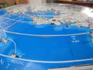
Penvins, pour ceux qui ne savent pas, le voilà sur la mappemonde ! Pour info, Bétahon est à droite entre Damgan et Billiers...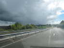
A l'arrivée, grand soleil ! Euh, sauf sous ce grain, et Penvins, c'est juste là, sous la pluie exactement !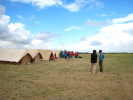
Vendredi soir, les scouts sont déjà arrivés et ont monté leurs tentes bien en ordre, pas comme les cervolistes !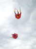
Samedi matin, quand je me lève, il y a déjà des cerfs-volants en l'air...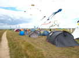
Le camp des cervolistes est un peu plus en b... désordre que celui des scouts...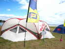
Les Espagnols ont monté calmement, eux, leur grande tente triangulaire, et se présentent par une pancarte en français...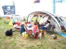
Gwenaëlle et David ont eux, une grande tente qui servira de PC aux monofilistes surtout du CVCF, mais aussi aux Pirates...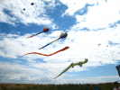
Les AWITAS sont arrivés, et ont monté leurs gros gonflables habituels...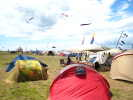
Les tentes des cervolistes couvrent deux côtés du terrain pourtant immense ! Et encore, les voitures sont exclues pour raisons écologiques et resteront sur le parking spécialement réservé.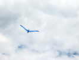
Le vent suivra le même schéma tous les jours : nul le matin, et brise de mer s'établissant progressivement, jusqu'à 35 km/h le samedi, moins dimanche et lundi ! Mon oiseau bleu, que j'ai monté au matin, commence à souffrir sérieusement, malgré un réglage de dièdre très violent !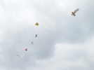
Un Brésilien a joué tout le week-end avec des pipas. Là, il les a montés en train, mais ça ne marche pas bien, ils tournent et se collent au fil...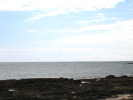
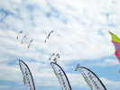
Les Flics sont présents, ainsi que de nombreux Révolutionnaires et s'en donnent à coeur-joie !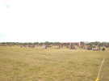
Le public est déjà venu nombreux en ce samedi malgré une météo moyenne, et se pose sur la pelouse devant la vaste aire de démonstration !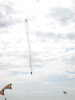
On verra même un dragon. Contrairement à la première impression sur la fragilité du papier, ils aiment le vent fort !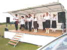
Le soir arrivé, dîner et Country-Dance sur l'estrade de show ! J'aime bien la Country-Music, mais les choix des danseurs ne correspondent pas aux miens, en général... Je dois avoir tort, ils sont spécialistes !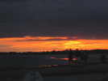
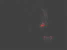
Vol de nuit, j'explique : en haut, un train de 3 Révos en mylars argentés de 3 couleurs, traînant de longues queues de mylar argenté aussi, majestueux et splendide ! En bas, un Révo qui l'accompagne, muni de 2 petites leds rouges...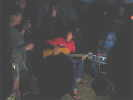
Sous la tente sono, on sonorise ! Foin des CDs, c'est du direct avec une guitare, un clavier, une chanteuse (la présentatrice toute la journée) et un Djembé, tous très bons, surtout les 3 premiers.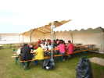
Dimanche matin, petit-déjeuner offert, un peu clairsemé, certains se sont couchés tard !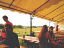
Je photographie les petits lapins qui sortent des buissons pour déjeuner aussi, ils ont dû avoir du mal à dormir, ils ont les yeux rouges !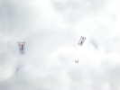
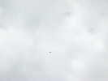
Un faucon tournoie là-haut, les cerfs-volants vont lui saboter sa journée de chasse, mais il ne nous en veut pas !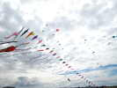
Les AWITAs ont lancé leurs deltas ultrastables et innombrables, et François a érigé son arche...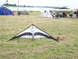
Même les deux-ligneurs peuvent être créatifs et ne pas acheter systématiquement dans le commerce, cette belle cigogne en témoigne...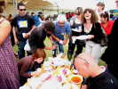
En prélude au déjeuner, les Ibères offrent un apéritif avec des productions de leur pays, dont plusieurs sortes de jambons, délicieux !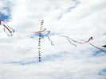
Dans la surface de démo, un train de petits deltas (petits forcément, des grands, ça arracherait les bras !) à longues queues, comme ceux des Italiens présentés à Berck...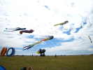
En parallèle aux "gros" des Awitas, nous avons monté le flow-form de Beauce avec une grosse queue verte de François...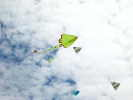
Avec les deltas Awitas et extrapolant leur plan, un créateur a réalisé ce delta spécial un peu plus agrémenté et qui vole bien...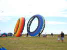
Vent moyen, c'est ce qu'il faut pour ces deux gros bols qu'il vaut mieux bien ancrer quand même...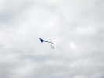
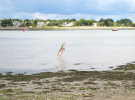
Sur les eaux calmes du port d'échouage, un Révo fait des ronds et des sillages...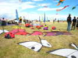
Une bande de cervolistes qui ne manque pas de matériel, en tout cas...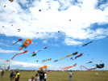
Grâce aux Awitas, mais pas qu'à eux, le ciel est maintenant bien meublé...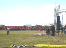
Comme tous les ans, les scouts font la chaîne... pour empêcher les enfants d'anticiper le lâcher de bonbons !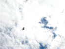
Il faut dire que les bonbons seront lâchés sous le Cody, là-haut, vers 50 m de haut !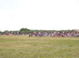
Et c'est parti, il vaut mieux ne pas avoir laissé de cerf-volant par terre, d'autant que les bonbons, de si haut, tombent en dehors de l'aire de démonstration !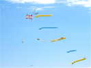
Là-haut, derrière ces énormes queues, des cerfs-volants difficiles à définir, sauf cette belle Box rouge et blanche !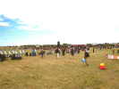
Les spectateurs sont revenus nombreux aujourd'hui, malgré la couverture nuageuse, quand même limitée !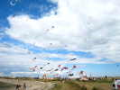
Le public en a pour son argent (même si c'est gratuit) et vient observer de près. On voit les cerfs--volants de 15 km, nous a-t-on dit !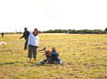
Corinne, la fiancée du Pirate, donne des leçons de NASA à Christian, le fils de Gwenaëlle !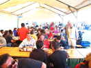
Dîner sous le barnum avant le deuxième vol de nuit. Ce soir, jarret et ratatouille, la qualité (comme la quantité) progresse tous les jours : Samedi midi, le sandwich était très petit pour des appétits de cervolistes, mais, les autres festivals, y a souvent rien samedi midi, alors...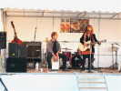
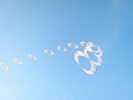
Zézé a monté ses cerfs-volants en un arc orienté comme le vent, très joli !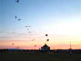
Le crépuscule gagne petit à petit, mais beaucoup de cerfs-volants resteront en l'air longtemps, voire toute la nuit !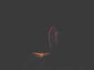
Vol de nuit pour nous seuls, sans musique sauf les vedettes sur la scène, là-bas. Un révo à Leds rouges vient papillonner gracieusement autour de mon Albatros !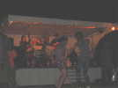
Pendant ce temps, sur l'estrade, les groupes se succèdent avec des talents divers. Fest-Noz ou pas, le public participe volontiers...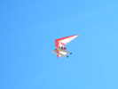
Lundi matin, grand beau temps. Un Deltaplane motorisé et hydravion vient nous survoler de ses deux flotteurs... Le décollage de l'eau doit être difficile avec les puissances habituellement limitées !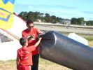
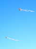
Ces deux grands Fagas tricolores traînent deux grandes queues tubulaires des mêmes couleurs...